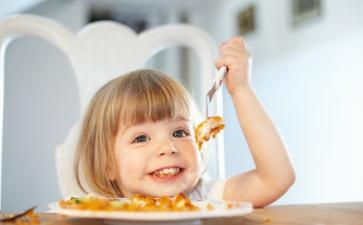

前几天晚上，实在懒得做饭了，我决定带着胖芽儿去吃自助。把胖芽儿放进餐椅后，我先去取了点儿东西让他先吃着，我又去取自己的东西。
一会儿取完东西回来，邻座一对
见我坐下，便问：“孩子多大了？”
我回答了之后，那位妈妈说：“那还比我家孩子小半个月呢。怎么自己吃东西吃得这么好？”我说：“可能因为都是他爱吃的吧！”
又问：“平时在家吃饭呢？也是自己吃吗？”我说：偶尔他会主动让我们喂，他不说我们一般不喂。或者极偶尔地、实在看他吃太少了，也会喂几口。
那位妈妈边吃边看胖芽儿吃东西边感慨。
一会儿，妈妈起身取东西，爸爸又开口了：“我想问一下，你们家这孩子自己吃饭吃这么好，到底是怎么训练的？”
哎，我还是先放下吃饭这事儿，说说“训练”这俩字吧。
训练爬、训练走路、训练说话、训练吃饭，训练坐马桶……矮妈，我就想知道，咱到底是在养孩子还是在养小猫小狗？明明这些事，都是孩子成长中自然而然的行为，怎么到了我们成人这里，就都变成了需要训练的事儿？
说“训练”俩字儿的人，先想想，训练孩子这事儿，到底满足的是孩子的需要还是你自己的需要？
走路，学步期的幼儿无一不是走得跌跌撞撞，摔倒了爬起来接着走，用百折不挠来形容，我觉得都不为过。这是孩子自己在发展、在成长。成人怕孩子摔倒，就不辞辛苦地弯腰驮背地去扶着孩子，美其名曰在“训练”孩子走路，还得加上一句抱怨：“一天到晚累得腰都快断了！这个阶段的孩子真不好带…”
我就想问，人家自己独立站稳后，第一次迈腿去尝试走路时，让你扶了吗？第一次摔倒时让你抱了吗？都没有吧？无非是大人的想法：你不会走，我得扶着你，离了我、你走不了；摔倒了你爬不起来，我得抱你起来。可这真未必是孩子自己的需要啊！
扯得有点远……回到吃饭这事儿！
其实，每个养育孩子的人，有一件事，甭管嘴上承认不承认，心里肯定是认可的。那就是：孩子天生是会自己吃饭的！
孩子从3个月左右会抓握开始，会把身边一切能抓到的东西塞到嘴里去“品尝”一番，这是所有妈妈都有目共睹的吧？那么，他能把一切该吃、不该吃的东西都放到嘴巴里，等到真正的食物放在他面前，我们难道不该相信他天然地就会把食物放进嘴巴吗？
那么，问题来了！孩子为什么一开始会吃，后来又不吃了呢？
无非就是，大人觉得他吃着太慢；吃得满身满脸满地，太脏；或者是孩子在探索不同食物的性状，把糊糊攥在手心里捏捏、把
在孙瑞雪和李跃儿的书里都能看到，正常发展的孩子手的敏感期正是从几个月大一直持续到1岁多，正是孩子添加辅食、开始接受其他食物的阶段。所以在这个阶段的孩子，用手去拿东西捏东西，是他在感受食物的大小、软硬、形状，同时也是在发展手指的精细动作，这些都是手的敏感期里要发展和学习的。
而大人，如果在早期，忍受不了孩子吃饭脏、慢、玩食物，去剥夺孩子自己尝试的机会，那么这个敏感期很有可能会持续更长，也就是说等到再大一些时，只要孩子碰到有食物可以拿在手里的机会，他依然会去玩，因为小时候的探索被干预、被打扰以至于没有顺利过渡。等到这时，大人就会堂而皇之地说：你看，他就是不会吃饭，拿着吃的东西就知道玩，不知道往嘴巴里吃！得，一个“不会吃饭”的标签又被贴到了孩子身上。
而换做很小时候给了充分的自由去探索、去工作的孩子呢？可能很快地就会过渡过去，不再经常玩食物，开始自己尝试用手拿食物去吃。这个时候，在我看来，用手吃、用勺吃，那是孩子自己的自由和权利。
说到用勺，刚开始练习用勺时，没有哪个孩子能天生就一点儿不洒、准确无误地去吃进嘴巴的，无一不是从碗到嘴巴这一路走一路洒的。这正是他们自己在练习控制自己的手臂和手，练多了自然就不洒了。
通常这时，大人们又跳出来说：孩子拿勺还拿不好，食物都洒了，还是得喂，等再大一些、勺子能拿稳了再说吧。所以，又一次把孩子成长的机会剥夺掉。然后还到处跟别人说：这孩子就是不会吃饭呀，让自己吃点儿东西就全都洒了呀，真是没办法，只能继续喂！
可我们能否仔细想想，到底是孩子不想自己吃饭还是我们不让孩子自己吃饭？我们有没有给孩子充分的时间让他探索、让他练习？试过一次就放弃的，到底是大人还是孩子？
还是回到我们吃自助餐的那天，那位爸爸问我：孩子自己吃得这么好，你是怎么训练的？
我：呃…其实我觉得最好的“训练”就是不管。
爸爸：不管？开什么玩笑！那哪儿行啊？你们这孩子你不管，他能自己吃。我们家那孩子，你要不管，她能把东西弄得满身都是，就是嘴里没有。
（典型的，光看到贼吃肉，没看到贼挨打！玩笑哈…）
我：我家的小时候也一样啊，满身满脸餐桌餐椅还有周围地上全是啊！但练一段时间慢慢就不洒了。
爸爸：关键她不吃啊，光玩啊！
我…
说到这儿，那咱们再聊聊这个“不吃、光玩儿”吧！
拿胖芽儿来说，我从来不否认，他小时候我们也是喂饭的，因为他手里拿着食物玩儿得多，吃进嘴巴的少。所以我们没有剥夺他玩儿的机会，只是他边玩儿我们边喂。
后来1岁左右给了勺，让他自己吃。也许是1岁以前食物玩儿得够多，所以给了他勺后，他就开始不怎么玩食物了，开始非常努力地用勺吃饭。当然毫不意外的，每顿饭洒得餐椅方圆一米以内都没处下脚，用惨不忍睹来形容都不为过！
忍啊坚持啊……直到现在，我都特别感谢当时还在北京帮我买菜做饭的芽儿奶奶，一次都没有抱怨过，一直非常支持、配合我，让胖芽儿有了充足的时间去练习。
两三个月之后，某天突然发现，咦？什么时候他的勺子已经用得这么好了，一顿饭可以吃得很干净了，只有餐盘里零星洒落的一丁点儿食物。
然后，不知怎么的，他就不愿意自己吃了。给勺不接着、让用手也不用，反正就是不吃。我们又一次重新开始喂饭，但那段时间他一直吃得很少，一顿饭只有几口的样子。一个月、两个月、三个月过去了，胃口慢慢好转，但习惯沿袭下来了：吃饭等着喂，你要不喂，那就一口不吃。
焦虑、挫败、
刚开始，每次饭菜上桌，芽爸就又习惯性地开始拿勺拿筷子、准备开始喂饭工作，但被我制止了。我说：以后吃饭，不再专门腾出一个人来给他喂饭了。他的肚子饿，需要吃东西，那是他的事情。我们自己到了吃饭的时间，正常吃我们自己的饭，这才是我们自己的事情，做给他看就行了。
我一直都说：孩子天性敏感，一旦大人下了什么决心要坚持的事情，他肯定会感知到的。我们下决心要让他明白，吃饭是他自己的需要，同时我们也要吃饭，也要满足我们自己的需要。他的需要不是排在第一位的，在照顾好他的需要之前，我们一定是选择先照顾好自己的需要的。
就这样，我想明白了这些，心里也下了决心，不再把喂他吃饭当成一件专门的事情去做了。而他立刻感受到了，就自己开始吃饭了。几天下来就习惯了，饭菜一上桌，一家三口各吃各的，边吃边聊，轻松愉快。
让孩子自己吃饭，说难也难，说易也易。考验的是我们的智慧、耐心与决心，还有一个很关键的：忍耐力。能忍住孩子吃饭脏、乱、慢，这个真的很重要。但是，我相信，无论何时，都一定有忍不了这些的、怕麻烦的老人或者有洁癖的妈妈，那么我想说的是，静下心来去问问自己，你真的想让孩子学会自己吃饭吗？让他自己吃饭，你真的能忍受最初的脏、乱、慢，还吃不了几口的状况吗？如果真的忍不了，那也真的没关系，不妨就坦然、安心地去喂孩子吃饭吧。
我不相信有5、6岁还需要喂饭的孩子，也不相信有人能坚持喂孩子喂到10岁。就像我们常看到的一句话：孩子能让我们抱的时候，只有那么几年，多抱抱吧。因为过了这几年，即使你想抱，人家也不会让你抱了。放在吃饭这个问题上就是，孩子能让我们喂几年呢？过了最初的这几年，你想喂，人家还不肯呢！所以想喂就踏踏实实地喂吧，终有一天每个孩子都会自己拿起勺子拿起筷子、自己吃饭的。
如果，你选择了继续喂饭，那么，我要说的是，你得明白这是你自己的选择、自己的决定。所以，就别再逢人就抱怨，说孩子不会自己吃饭；更不要跟别人家孩子去比较，人家孩子怎么吃得这么好？最最最要不得的是当着孩子的面说：“你看看，人家比你小，都能自己吃饭，你到底什么时候才能学会自己吃饭呢？”
我们要明白，决定继续喂饭，这是大人的决定，所以千万不要把“不会吃饭”的责任让孩子来承担，更不必让小小的孩子不明所以地、就被一个从天而降的“别人家孩子”、而且是会自己吃饭的“别人家孩子”给打败了。
相信我们的孩子，终有一天会自己吃饭，就像我们相信孩子终有一天能学会走路、终有一天不再吃奶，终有一天会自己睡觉，终有一天会离开我们一样，相信相信的力量！
想让孩子独立吃饭的父母们，从现在起，放下对孩子的一切期待，忍住自己的嘴、忍住自己的手，放手让孩子去练习吧。
实在忍不住自己的，那就不加抱怨和指责地、好好享受你喂孩子吃饭的这段美好时光吧！因为这就像我们享受喂奶一样，这段时光最终会一去不复返的……